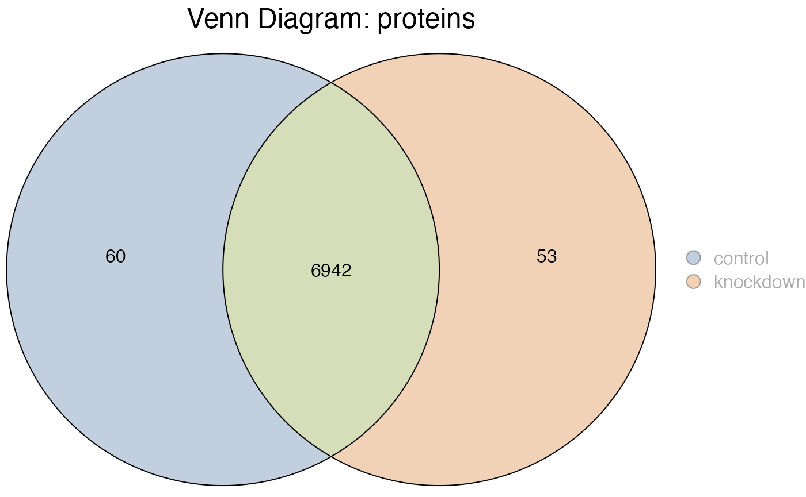
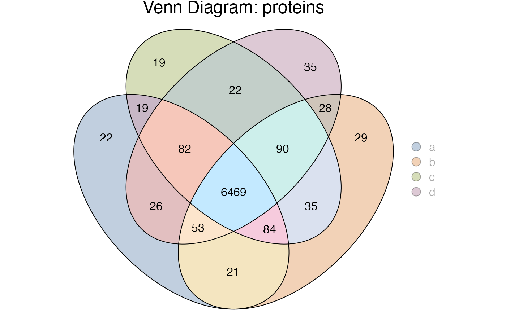

Extracting
extracting.RmdVenn Diagrams and The Underlying Data
In addition to offering a variety of methods for visualizing your data, the use of Venn and Euler diagrams provides a potent and visually engaging means of analysis. These diagrams excel in highlighting and contrasting the differences in analytes - which are various substances analyzed in the lab - across different sample groups. This approach is particularly useful in identifying unique or shared components among the groups, thereby offering a clear and concise graphical representation of complex data sets. The visual simplicity of Venn and Euler diagrams belies their analytical power, making them indispensable tools for researchers seeking to understand the intricate relationships and variances within their data. Take for example the following Venn.
hela_proteins %>%
subset(imputed == 0) %>%
plot_venn()
#>
#> ℹ Subsetting data: imputed == 0
#> ✔ Subsetting data: imputed == 0 ... done
#> 
While visualizing the differences between sample groups is
interesting, often we are interested in the underlying data for a given
segment. In tidyproteomics we can use the intersection()
function to get a subset of data specific to a region defined by Venn
and Euler diagram overlaps.
Here in this simple example we can extract a table of proteins
exclusive to the 60 in “control”. Note how the data now shows only
1 sample remaining and 3 files, as we just
removed all the “knockdown” proteins and the files specific to them.
hela_proteins %>%
subset(imputed == 0) %>%
intersection(.include = c('control'), .exclude = c('knockdown'))
#>
#> ℹ Subsetting data: imputed == 0
#> ✔ Subsetting data: imputed == 0 ... done
#>
#> ℹ Intersection subset containing 60 proteins
#>
#> ── Quantitative Proteomics Data Object ──
#>
#> Origin ProteomeDiscoverer
#> proteins (78.40 kB)
#> Composition 3 files
#> 1 samples (control)
#> Quantitation 60 proteins
#> 2.9 log10 dynamic range
#> 9.47% missing values
#> *imputed
#> Accounting (4) num_peptides num_psms num_unique_peptides imputed
#> Annotations (9) description biological_process cellular_component molecular_function
#> gene_name wiki_pathway gene_id_ensemble gene_id_entrez
#> reactome_pathway
#> In a more complex example, individual segments can be extracted. In this hypothetical example we created 4 sample groups to generate a complex overlapping diagram.
exp_proteins <- hela_proteins %>%
subset(imputed == 0) %>%
subset(!sample_file %like% "F[56]") %>%
# reassigning samples here just to illistrate a point
reassign(sample_file %like% 'F1', .replace = 'a') %>%
reassign(sample_file %like% 'F2', .replace = 'b') %>%
reassign(sample_file %like% 'F3', .replace = 'c') %>%
reassign(sample_file %like% 'F4', .replace = 'd')
#>
#> ℹ Subsetting data: imputed == 0
#> ✔ Subsetting data: imputed == 0 ... done
#>
#> ℹ Subsetting data: !sample_file %like% F[56]
#> ✔ Subsetting data: !sample_file %like% F[56] ... done
#>
#> ℹ Reassigning 1
#> ℹ Reassigning 3
#> ℹ Reassigning 4
#> ℹ Reassigning 2
exp_proteins %>% plot_venn()
Here we can extract the 82 proteins found in a&c&d but not b with the following code.
exp_proteins %>% intersection(.include = c('a','c','d'), .exclude = c('b'))
#> ℹ Intersection subset containing 82 proteins
#>
#> ── Quantitative Proteomics Data Object ──
#>
#> Origin ProteomeDiscoverer
#> proteins (118.22 kB)
#> Composition 3 files
#> 3 samples (a, d, c)
#> Quantitation 82 proteins
#> 2.4 log10 dynamic range
#> 23.6% missing values
#> *imputed
#> Accounting (4) num_peptides num_psms num_unique_peptides imputed
#> Annotations (9) description biological_process cellular_component molecular_function
#> gene_name gene_id_ensemble wiki_pathway gene_id_entrez
#> reactome_pathway
#> Extracting a different set, for example the 21 proteins found in
a&b but not in c or b with the following code. Again, note that we
now only have the 2 samples and 2 files
associated with the proteins exclusive to the intersection we
selected.
exp_proteins %>% intersection(.include = c('a','b'), .exclude = c('c','d'))
#> ℹ Intersection subset containing 21 proteins
#>
#> ── Quantitative Proteomics Data Object ──
#>
#> Origin ProteomeDiscoverer
#> proteins (37.29 kB)
#> Composition 2 files
#> 2 samples (a, b)
#> Quantitation 21 proteins
#> 1.1 log10 dynamic range
#> 11.9% missing values
#> *imputed
#> Accounting (4) num_peptides num_psms num_unique_peptides imputed
#> Annotations (9) description biological_process cellular_component molecular_function
#> gene_id_entrez gene_name wiki_pathway reactome_pathway
#> gene_id_ensemble
#>